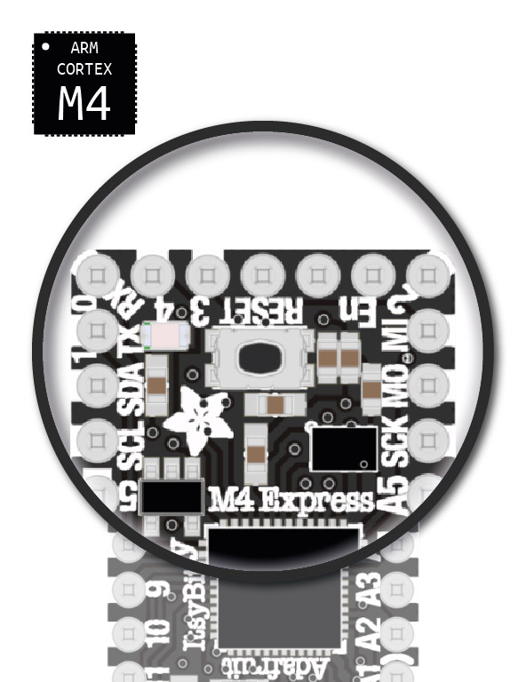

Should you run into issues during coding please first carefully read the troubleshooting page.
To give you a clear overview we made the following pinout page:
Pinout page
In case any of your components not working as expected, please check the documentation page of the component first and try getting it running with the example code first.
Most issues can be fixed by double-checking the following:
Serial monitor, indicating a software issue (e.g. typos, coding mistake, missing library, etc.)If you checked the points above thoroughly and your component is still not working, you can find extra help at IO’s Model Making and Machine Lab (PMB).
The Connected Interaction Kit can be extended with additional Grove components. Every Grove component should work.
You can get additional components at following places:
Each course using the Connected Interaction Kit will have their own tech support that can guide and support you in learning prototyping.
| For Itsy Bitsy M4 | For RP2040 Expander |
|---|---|
|  | |
| Start upgrade | Start upgrade |
Guide based on Adafruit update page, check this page for more in-depth guidance
Download the CircuitPython Library you want. You can find the complete Adafruit CircuitPython bundle or the community bundle from this page.

Unzip the file and copy the desired file(s) to the lib folder on your ItsyBitsy
Alternatively you can read more about libraries on the following page: libraries
This is only for the Itsy Bitsy M4. Guide based on Adafruit update page, check this page for more in-depth guidance
This is a guide to update the bootloader, not a guide to update the Circuit Python version
INFO_UF2.TXT, you should see something like UF2 Bootloader v2.0.0, this shows you the current version of the bootloader you are using.

INFO_UF2.TXT, you should see something like UF2 Bootloader v3.15.0, this shows you the current version of the bootloader you are upgraded to.